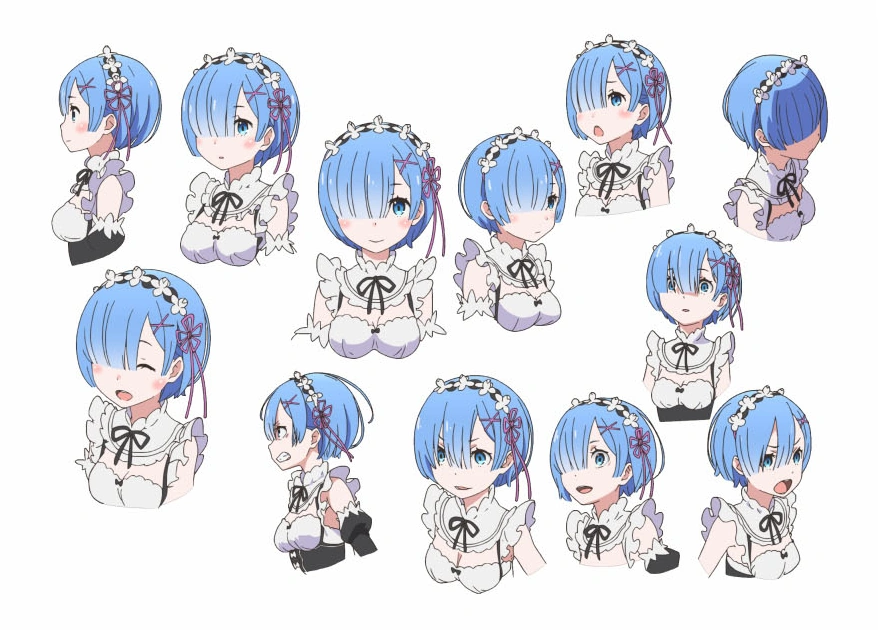

Oni Maid dari Roswaal Manor
"My hero is the greatest in the world!"
— Rem, Re:ZERO Anime Episode 21

Rem adalah salah satu karakter utama dalam light novel dan anime Re:Zero kara Hajimeru Isekai Seikatsu (Re:Zero: Starting Life in Another World) karya Tappei Nagatsuki.
Ia adalah oni (iblis) berambut biru yang bekerja sebagai maid di kediaman Roswaal L. Mathers, bersama saudara kembarnya, Ram. Berbeda dengan oni pada umumnya yang memiliki dua tanduk, Rem kehilangan salah satu tanduknya — sebuah simbol trauma masa lalu yang membentuk kepribadiannya.
Rem dikenal sangat setia, pekerja keras, dan rela mengorbankan dirinya demi orang-orang yang ia sayangi, terutama Subaru Natsuki, tokoh protagonis cerita yang akhirnya ia cintai dengan tulus.
Ram adalah kakak kembar Rem, dan sama-sama bekerja sebagai maid di kediaman Roswaal L. Mathers. Awalnya, Ram lahir dengan satu tanduk dan dianggap sebagai reinkarnasi "Oni God" oleh sukunya karena bakat dan kekuatannya yang luar biasa.
Setelah serangan Witch Cult ke desanya, Ram kehilangan tanduknya — sama seperti Rem. Ia sering terlihat malas dan asal-asalan saat bekerja, padahal sebenarnya tubuhnya terus menahan rasa sakit kronis akibat kehilangan tanduk tersebut.
Kepribadiannya cenderung sarkastik dan menjaga jarak dari orang lain, tapi diam-diam ia sangat melindungi orang-orang yang ia sayangi — termasuk Rem, adiknya sendiri.
Video ditaruh di folder videos/
"When you said that you hate yourself, it made me want to tell you all the wonderful things I know about you."
"No matter what happens, even when it looks like you're gonna lose, when no one else believes in you, when you don't believe in yourself, I will believe!"